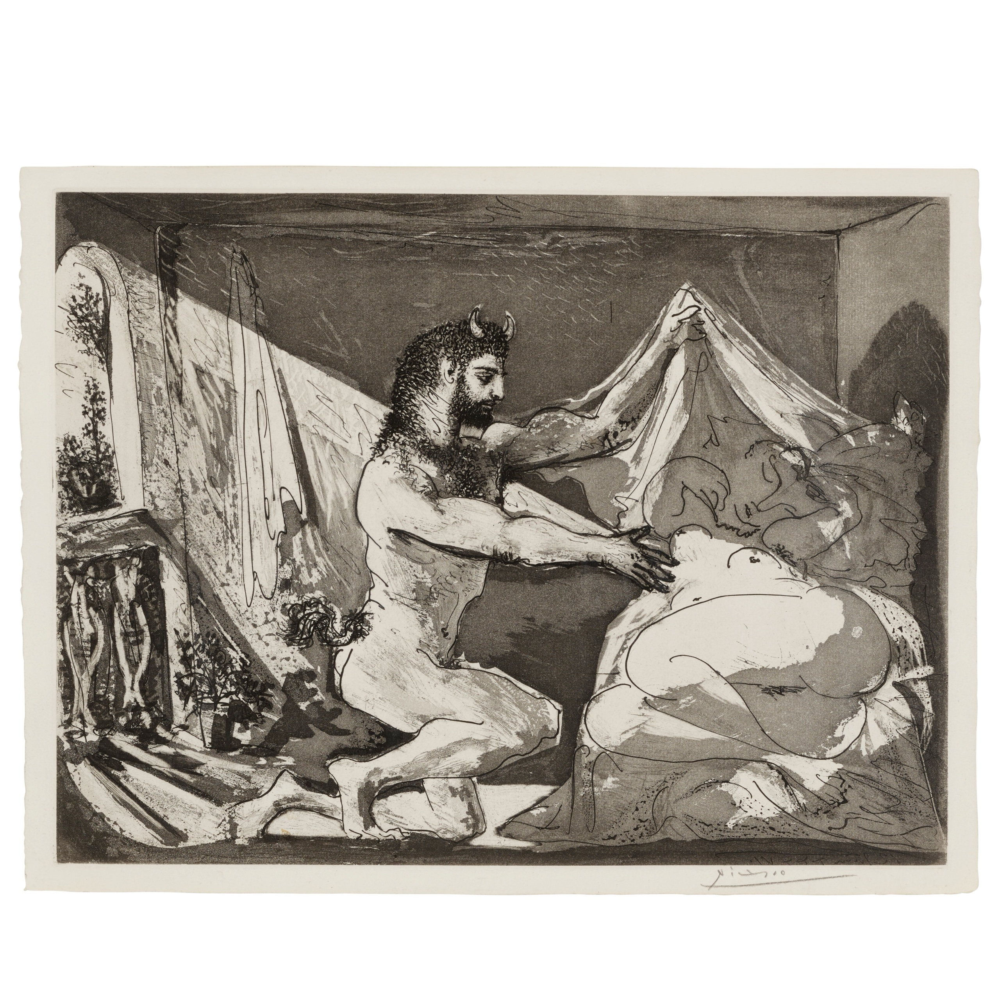

Lágrimas de Eros · Obra 86 de 121
Fauno descubriendo a una durmiente (Faune dévoilant une dormeuse; Júpiter y Antíope, según Rembrandt)
Pablo Picasso (1936)

La lámina reproduce la estampa grabada el 12 de junio de 1936 para la Suite Vollard y estampada y publicada en 1939: un fauno retira el velo de una mujer dormida. El Art Institute of Chicago la cataloga como «Júpiter y Antíope, según Rembrandt». Es una estampa de tirada, así que la conservan varios museos. El pie de Bataille dice «acuarela para la Suite Vollard, 1937» y la fecha en «1930-1936».
Lo que hace que destaque
La lámina reproduce la estampa grabada el 12 de junio de 1936 para la Suite Vollard y estampada y publicada en 1939: un fauno retira el velo de una mujer dormida. El Art Institute of Chicago la cataloga como «Júpiter y Antíope, según Rembrandt». Es una estampa de tirada, así que la conservan varios museos. El pie de Bataille dice «acuarela para la Suite Vollard, 1937» y la fecha en «1930-1936».
Contexto histórico
Bataille la llama acuarela, pero lo que se reproduce coincide con la aguatinta de la Suite Vollard; se sigue la catalogación del museo. El enlace lleva a un ejemplar de la estampa. La imagen es la hoja entera de un ejemplar subastado en Bonhams (Los Ángeles, 26 de marzo de 2024, lote 65): aguatinta con buril sobre verjurado Montval con filigrana Vollard, plancha 31,6 × 41,8 cm (Bloch 230, Baer 609).
Autoría y procedencia
Pablo Ruiz Picasso (1881-1973), pintor y escultor español, cofundador del cubismo y figura cumbre del arte contemporáneo universal.
En los libros
Las lágrimas de Eros, de Georges Bataille · Lámina de la p. 161
Ficha pendiente de contrastar con fuentes académicas.